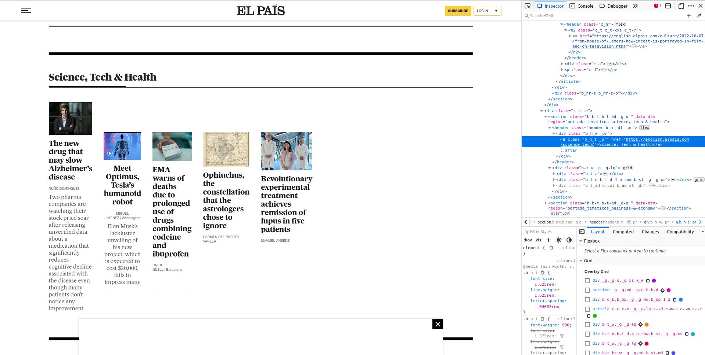
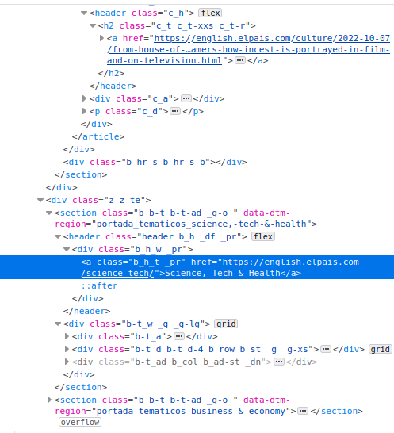

Introduction XPath
Introduction to XPath
XPath (XML Path Language) is the language designed to identify the address of one or several tags within an HTML or XML document.
Example
Extract Hyperion Cantos
<bookshelf>
<dansimmons>
<book>
Hyperion Cantos
</book>
</dansimmons>
</bookshelf>The first node is bookshelf so we start with
/bookshelf.The child of bookshelf is
<dansimmons>so the XPath becomes/bookshelf/dansimmons/The child of
<dansimmons>is<book>so we just add that to our XPath:/bookshelf/dansimmons/book
XPath tricks: //
//dansimmons: search the entire document and bring me back all<dansimmons>tags
For example:
book_xml %>%
xml_find_all("//dansimmons"){xml_nodeset (1)}
[1] <dansimmons>\n <book>\n Hyperion Cantos\n </book>\n</dansimm ...XPath tricks: //
That trick works very well with repeated tags that have important information:
raw_xml <- "
<bookshelf>
<authors>
<dansimmons>
<book>
Hyperion Cantos
</book>
<book>
<release_year>
1996
</release_year>
Endymion
</book>
</dansimmons>
</authors>
</bookshelf>"
book_xml <- raw_xml %>% read_xml()Several book nodes..
XPath tricks //
book_xml %>%
xml_find_all("//dansimmons"){xml_nodeset (1)}
[1] <dansimmons>\n <book>\n Hyperion Cantos\n </book>\n <book>< ...book_xml %>%
xml_find_all("//dansimmons/book"){xml_nodeset (2)}
[1] <book>\n Hyperion Cantos\n </book>
[2] <book><release_year>\n 1996\n </release_year>\n End ...XPath tricks: //
If you use // sequentially, it will work as expected: jump through all nodes and extract any instances of the node:
book_xml %>%
xml_find_all("//dansimmons//release_year"){xml_nodeset (1)}
[1] <release_year>\n 1996\n </release_year>Motivation for this comes from:
book_xml %>%
xml_find_all("//dansimmons/release_year"){xml_nodeset (0)}Which does not find the node.
XPath tricks: subsetting nodes by number
- XPath als allows to pick by number
book_xml %>%
xml_find_all("//dansimmons/book[2]"){xml_nodeset (1)}
[1] <book><release_year>\n 1996\n </release_year>\n End ...book_xml %>%
xml_find_all("//dansimmons/book[8]"){xml_nodeset (0)}XPath tricks: *
In reality, we won’t know the exact address of what we’re looking for but rather some vague intutions of the node. For that we use *:
book_xml %>%
xml_find_all("//dansimmons/*"){xml_nodeset (2)}
[1] <book>\n Hyperion Cantos\n </book>
[2] <book><release_year>\n 1996\n </release_year>\n End ...The result is not the dansimmons tag but all it’s children, regardless of whether they are <book> tags or any other tag
XPath tricks: *
*can be used to fill out a tag which you don’t know the name of.
book_xml %>%
xml_find_all("/*/*/*/book"){xml_nodeset (2)}
[1] <book>\n Hyperion Cantos\n </book>
[2] <book><release_year>\n 1996\n </release_year>\n End ...Summary
/links between two tags that have direct parent-child relationship//finds all tags in the HTML/XML tree regardless of depthUse
[number]to subset the position of a node. For example://a[8]will return the 8th<a>tag.*is a wildcard that allows to signal nodes without specifying which nodes.
Filter by attributes
- Let’s update our example to include additional authors
# Note the new <stephenking> tag with it's book 'The Stand' and all <book> tags have some attributes
raw_xml <- "
<bookshelf>
<authors>
<dansimmons>
<book price='yes' topic='scifi'>
Hyperion Cantos
</book>
<book topic='scifi'>
<release_year>
1996
</release_year>
Endymion
</book>
</dansimmons>
<stephenking>
<book price='yes' topic='horror'>
The Stand
</book>
</stephenking>
</authors>
</bookshelf>"
book_xml <- raw_xml %>% read_xml()Filter by attributes
Power of XPath is filtering:
book_xml %>%
xml_find_all("//dansimmons//book[@price='yes']") %>%
xml_text()[1] "\n Hyperion Cantos\n "- Find all
<book>tags that have an attribute ofprice - That is set to
yes - That are descendants (but not necessarily direct child, because of the
//) of the<dansimmons>tag.
Filter by attributes
and keyword is useful:
book_xml %>%
xml_find_all("//book[@price='yes' and @topic='horror']") %>%
xml_text()[1] "\n The Stand\n "Or grab only books which have a price attribute (different from having price set to yes or no)
book_xml %>%
xml_find_all("//book[@price]"){xml_nodeset (2)}
[1] <book price="yes" topic="scifi">\n Hyperion Cantos\n </book>
[2] <book price="yes" topic="horror">\n The Stand\n </book>Filter by attributes
Or find all books which did not have a price:
book_xml %>%
xml_find_all("//book[@price!='yes']"){xml_nodeset (0)}You can also use the keyword or to match certain properties:
book_xml %>%
xml_find_all("//book[@price='yes' or @topic='scifi']") %>%
xml_text()[1] "\n Hyperion Cantos\n "
[2] "\n 1996\n \n Endymion\n "
[3] "\n The Stand\n " Filter by attributes
XPath has additional functions that are useful for filtering:
contains()starts-with()text()not()count()
Case study: Web scraping El País
newspaper_link <- elpais_newspaper_ex()
newspaper <- read_html(newspaper_link)
Case study: Web scraping El País
Objective: figuring out the links to all sections of the newspaper to be able to scrape all news separately by area.

Case study: Web scraping El País
On the left you can see the section ‘Science, Tech & Health’ and the articles that belong to that section. The words ‘Science, Tech & Health’ in bold contain a hyperlink to that main page on science articles. That’s what we want to access.
On the right, you’ll see that I opened the web developer tools from the browser. After clicking manually on ‘Science, Tech & Health’ on the right, the source code highlights in blue where the hyperlink is.
Case study: Web scraping El País
- You want an
<a>tag that is nested within a<section>tag (two tags above the<a>tag)

Case study: Web scraping El País
newspaper %>% xml_find_all("//section//a[contains(@href, 'science')]"){xml_nodeset (20)}
[1] <a href="https://english.elpais.com/science-tech/2022-10-07/is-climate-c ...
[2] <a href="https://english.elpais.com/science-tech/2022-10-07/worlds-top-m ...
[3] <a href="https://english.elpais.com/science-tech/" class="b_h_t _pr">Sci ...
[4] <a href="https://english.elpais.com/science-tech/2022-10-07/a-new-drug-t ...
[5] <a href="https://english.elpais.com/science-tech/2022-10-07/a-new-drug-t ...
[6] <a href="https://english.elpais.com/science-tech/2022-10-06/european-med ...
[7] <a href="https://english.elpais.com/science-tech/2022-10-06/european-med ...
[8] <a href="https://english.elpais.com/science-tech/2022-10-06/ophiuchus-th ...
[9] <a href="https://english.elpais.com/science-tech/2022-10-06/ophiuchus-th ...
[10] <a href="https://english.elpais.com/science-tech/2022-09-17/one-girls-ge ...
[11] <a href="https://english.elpais.com/science-tech/2022-09-17/one-girls-ge ...
[12] <a href="https://english.elpais.com/science-tech/2022-10-06/global-warmi ...
[13] <a href="https://english.elpais.com/science-tech/2022-10-06/global-warmi ...
[14] <a href="https://english.elpais.com/science-tech/" class="b_h_t _pr">Sci ...
[15] <a href="https://english.elpais.com/science-tech/2022-10-06/how-can-a-sm ...
[16] <a href="https://english.elpais.com/science-tech/2022-10-06/how-can-a-sm ...
[17] <a href="https://english.elpais.com/science-tech/2022-10-04/the-orbit-of ...
[18] <a href="https://english.elpais.com/science-tech/2022-10-06/european-med ...
[19] <a href="https://english.elpais.com/science-tech/2022-10-01/rare-diamond ...
[20] <a href="https://english.elpais.com/science-tech/2022-09-30/carole-hoove ...XPath seems right but the output returns too many tags…expecting one link (something like https://english.elpais.com/science-tech/)
Case study: Web scraping El País
We know that between our <a> tag and <section> tag there are two additional <header> and <div> tags

Case study: Web scraping El País
Let’s explain the XPath:
//sectionmeans to search for all sections//section/*/*means to search for two direct children of<section>a[contains(@href, 'science')]finds the<a>tags for which the@hrefattribute contains the text ‘science’.
Overall: Find all <a> tags for which the @href attribute contains the text ‘science’ which are descendant of the <section> tag with two tags in between.
Case study: Web scraping El País
newspaper %>%
xml_find_all("//section/*/*/a[contains(@href, 'science')]"){xml_nodeset (2)}
[1] <a href="https://english.elpais.com/science-tech/" class="b_h_t _pr">Scie ...
[2] <a href="https://english.elpais.com/science-tech/" class="b_h_t _pr">Scie ...That’s what we wanted 🎉!
Case study: Web scraping El País
containssearches for text in an attributeUse it with the function
text()which points to the text of the tag
newspaper %>%
xml_find_all("//section/*/*/a[contains(text(), 'Science, Tech & Health')]") %>%
xml_attr("href")[1] "https://english.elpais.com/science-tech/"Case study: Web scraping El País
not(): negates everything inside a filter expression
newspaper %>%
xml_find_all("//section/*/*/a[not(contains(text(), 'Science, Tech & Health'))]") %>%
xml_attr("href") [1] "https://english.elpais.com/economy-and-business/"
[2] "https://english.elpais.com/opinion/the-global-observer/"
[3] "https://english.elpais.com/international/"
[4] "https://english.elpais.com/culture/"
[5] "https://english.elpais.com/science-tech/"
[6] "https://english.elpais.com/society/"
[7] "https://elpais.com/archivo/#?prm=hemeroteca_pie_ep"
[8] "https://elpais.com/archivo/#?prm=hemeroteca_pie_ep"
[9] "https://play.google.com/store/apps/details?id=com.elpais.elpais&hl=es&gl=US"
[10] "https://apps.apple.com/es/app/el-pa%C3%ADs/id301049096"
[11] "https://elpais.com/suscripciones/#/campaign#?prod=SUSDIGCRART&o=susdig_camp&prm=pw_suscrip_cta_pie_eng&backURL=https%3A%2F%2Fenglish.elpais.com"Case study: Web scraping El País
You might be interested in scraping newspaper sites to measure bias in news published in certain sections…
count()allows you to use conditionals based on counting something
newspaper %>%
xml_find_all("//section[count(.//article)>3]"){xml_nodeset (5)}
[1] <section class="_g _g-md _g-o b b-d" data-dtm-region="portada_apertura">< ...
[2] <section class="b b-t b-t-ad _g-o " data-dtm-region="portada_tematicos_sc ...
[3] <section class="b b-m _g-o" data-dtm-region="portada_arrevistada_culture" ...
[4] <section class="b b-t b-t-df b-t-1 _g-o " data-dtm-region="portada_temati ...
[5] <section class="b b-t b-t-df b-t-1 _g-o " data-dtm-region="portada_temati ...Case study: Web scraping El País
We see that the attribute data-dtm-region contains some information about the name of the section:
newspaper %>%
xml_find_all("//section[count(.//article)>3]") %>%
xml_attr("data-dtm-region")[1] "portada_apertura"
[2] "portada_tematicos_science,-tech-&-health"
[3] "portada_arrevistada_culture"
[4] "portada_tematicos_celebrities,-movies-&-tv"
[5] "portada_tematicos_our-selection" Five sections, mostly entertainment related except for the first one which is the front page (‘aperatura’ is something like ‘opening’)
XPath cookbook
Conclusion
XPath is a very rich language with over 20 years of development. I’ve covered some basics as well as intermediate parts of the language but there’s much more to be learned: